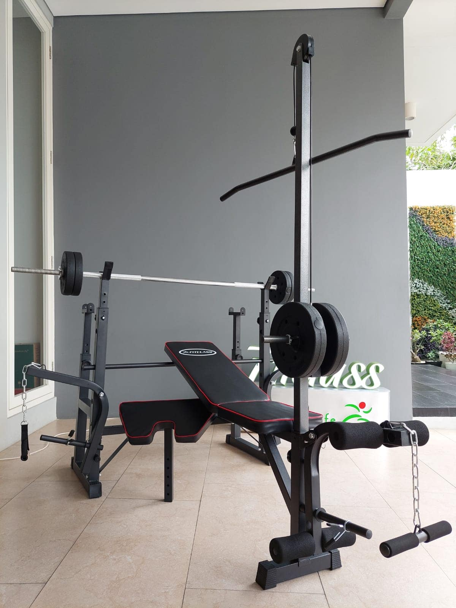

BENCH PRESS

Bench press adalah alat gym yang terdiri dari barbel, tiang, dan bangku untuk tempat berbaring. Alat ini memungkinkan seseorang mengangkat barbel ke atas dalam keadaan berbaring di atas dada. Idealnya, beban harus diangkat sampai kedua tangan tegak vertikal dan diturunkan lagi sampai siku ditekuk.
Latihan angkat beban ini berfungsi untuk meningkatkan kekuatan otot lengan dan pundak. Cocok bagi kamu yang ingin memiliki bagian lengan yang ideal.
Sumber: IDN Times